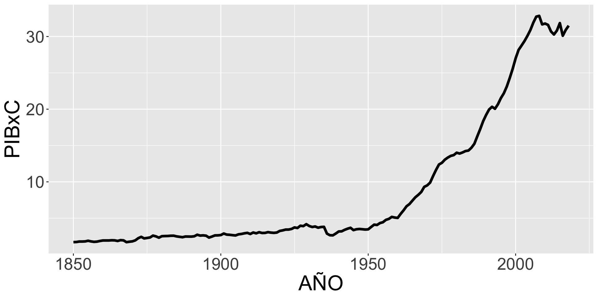

AÑO PIBxC Desviacion_Experto
1 1850 1.706 0.041050418
2 1851 1.720 0.040967578
3 1852 1.785 0.040582963
4 1853 1.785 0.040582963
5 1854 1.804 0.040470537
6 1855 1.892 0.039949827
7 1856 1.800 0.040494205
8 1857 1.742 0.040837401
9 1858 1.774 0.040648052
10 1859 1.862 0.040127341
11 1860 1.930 0.039724975
12 1861 1.932 0.039713140
13 1862 1.932 0.039713140
14 1863 1.959 0.039553377
15 1864 1.946 0.039630300
16 1865 1.865 0.040109590
17 1866 1.977 0.039446868
18 1867 1.946 0.039630300
19 1868 1.701 0.041080004
20 1869 1.760 0.040730892
21 1870 1.809 0.040440951
22 1871 1.948 0.039618466
23 1872 2.246 0.037855152
24 1873 2.428 0.036778229
25 1874 2.216 0.038032667
26 1875 2.276 0.037677637
27 1876 2.346 0.037263436
28 1877 2.601 0.035754560
29 1878 2.495 0.036381779
30 1879 2.316 0.037440951
31 1880 2.520 0.036233850
32 1881 2.538 0.036127341
33 1882 2.547 0.036074087
34 1883 2.582 0.035866986
35 1884 2.590 0.035819649
36 1885 2.493 0.036393614
37 1886 2.436 0.036730892
38 1887 2.381 0.037056336
39 1888 2.475 0.036500123
40 1889 2.469 0.036535626
41 1890 2.463 0.036571128
42 1891 2.509 0.036298939
43 1892 2.719 0.035056336
44 1893 2.603 0.035742726
45 1894 2.633 0.035565211
46 1895 2.589 0.035825566
47 1896 2.330 0.037358111
48 1897 2.469 0.036535626
49 1898 2.628 0.035594797
50 1899 2.636 0.035547460
51 1900 2.676 0.035310773
52 1901 2.885 0.034074087
53 1902 2.740 0.034932075
54 1903 2.713 0.035091839
55 1904 2.660 0.035405448
56 1905 2.622 0.035630300
57 1906 2.775 0.034724975
58 1907 2.828 0.034411365
59 1908 2.917 0.033884738
60 1909 2.978 0.033523791
61 1910 2.823 0.034440951
62 1911 3.027 0.033233850
63 1912 2.915 0.033896572
64 1913 3.067 0.032997164
65 1914 2.962 0.033618466
66 1915 2.973 0.033553377
67 1916 3.076 0.032943910
68 1917 3.014 0.033310773
69 1918 2.979 0.033517874
70 1919 3.024 0.033251602
71 1920 3.244 0.031949827
72 1921 3.322 0.031488288
73 1922 3.427 0.030866986
74 1923 3.433 0.030831483
75 1924 3.518 0.030328525
76 1925 3.725 0.029103673
77 1926 3.650 0.029547460
78 1927 3.959 0.027719057
79 1928 3.907 0.028026750
80 1929 4.173 0.026452785
81 1930 3.923 0.027932075
82 1931 3.787 0.028736809
83 1932 3.856 0.028328525
84 1933 3.690 0.029310773
85 1934 3.783 0.028760478
86 1935 3.806 0.028624383
87 1936 2.876 0.034127341
88 1937 2.654 0.035440951
89 1938 2.636 0.035547460
90 1939 2.885 0.034074087
91 1940 3.170 0.032387697
92 1941 3.191 0.032263436
93 1942 3.394 0.031062253
94 1943 3.551 0.030133259
95 1944 3.676 0.029393614
96 1945 3.357 0.031281188
97 1946 3.473 0.030594797
98 1947 3.513 0.030358111
99 1948 3.478 0.030565211
100 1949 3.435 0.030819649
101 1950 3.464 0.030648052
102 1951 3.790 0.028719057
103 1952 4.105 0.026855152
104 1953 4.066 0.027085921
105 1954 4.328 0.025535626
106 1955 4.442 0.024861069
107 1956 4.769 0.022926158
108 1957 4.900 0.022151010
109 1958 5.176 0.020517874
110 1959 5.085 0.021056336
111 1960 5.037 0.021340359
112 1961 5.587 0.018085921
113 1962 6.083 0.015151010
114 1963 6.639 0.011861069
115 1964 6.945 0.010050418
116 1965 7.420 0.007239768
117 1966 7.881 0.004511957
118 1967 8.215 0.002535626
119 1968 8.606 0.000222016
120 1969 9.307 0.003925913
121 1970 9.511 0.005133014
122 1971 9.894 0.007399286
123 1972 10.796 0.012736564
124 1973 11.638 0.017718812
125 1974 12.388 0.022156682
126 1975 12.621 0.023535380
127 1976 13.053 0.026091593
128 1977 13.342 0.027801653
129 1978 13.573 0.029168517
130 1979 13.681 0.029807570
131 1980 14.008 0.031742481
132 1981 13.895 0.031073842
133 1982 14.045 0.031961416
134 1983 14.237 0.033097511
135 1984 14.308 0.033517629
136 1985 14.690 0.035777984
137 1986 15.237 0.039014670
138 1987 16.268 0.045115262
139 1988 17.272 0.051056090
140 1989 18.359 0.057488043
141 1990 19.215 0.062553132
142 1991 19.958 0.066949582
143 1992 20.329 0.069144848
144 1993 20.057 0.067535380
145 1994 20.674 0.071186268
146 1995 21.522 0.076204019
147 1996 22.185 0.080127096
148 1997 23.114 0.085624138
149 1998 24.285 0.092553132
150 1999 25.550 0.100038339
151 2000 26.995 0.108588635
152 2001 28.154 0.115446623
153 2002 28.753 0.118991002
154 2003 29.372 0.122653724
155 2004 30.088 0.126890410
156 2005 30.886 0.131612303
157 2006 31.907 0.137653724
158 2007 32.735 0.142553132
159 2008 32.844 0.143198102
160 2009 31.670 0.136251357
161 2010 31.786 0.136937747
162 2011 31.600 0.135837156
163 2012 30.699 0.130505795
164 2013 30.280 0.128026505
165 2014 30.819 0.131215854
166 2015 31.847 0.137298694
167 2016 30.110 0.127020588
168 2017 30.908 0.131742481
169 2018 31.497 0.135227688Antes de modelizar, diseña
1. Modelizar es un arte
1. Modelizar es un arte
Cualquiera puede hacer arte.
Pero una buena carrera en el mundo del arte requiere de conocimientos en técnicas, expresividad herramientas y referencias/inspiración.
1. Modelizar es un arte
Cualquiera puede hacer modelos.
Pero una buena carrera en el mundo de al modelización de datos requiere de conocimientos en modelos, contexto de datos y diseño experimental.
1. Modelizar es un arte
Yo apenas puedo explicar contexto de datos… pero si puedo ayudar en modelos y en diseño experimental.
1. Modelizar es un arte
No hay un modelo mejor que otro: cada situación requerirá de diferentes herramientas.
- La Regresión logística, por ejemplo, es deseable cuando funciona porque los parámetros son muy interpretables.
- Los Random Forest son geniales porque pueden lidiar con patrones muy difíciles, pero olvídate de su interpretación
1. Modelizar es un arte
Cada modelo tiene sus propiedades.
Cubriremos los principales a lo largo de este curso.
1. Modelizar es un arte
Antes de lanzarte a hacer cualquier tipo de modelización, es necesario fijar el contexto de los datos y estar seguro de que todo será comaprable entre si.
Ten un buen diseño y minimiza la confusión.
Sin esto, los modelos fallarán a la hora de inferenciar.
1. Modelizar es un arte

2. Todos los modelos están equivocados
2. Todos los modelos están equivocados

“All models are wrong, but some are useful”
- George E. P. Box
2. Todos los modelos están equivocados
- Box-Jenkins (procedimientos de time series)
- BoxCox transformations
- Definición de “robustez” estadística
- “Sesión de cerveza del lunes por la noche”
2. Todos los modelos están equivocados
- Criterios para la elección de modelos, segñun Box:
- Parsimonia
- Dado que todos los modelos son erróneos, un científico no puede obtener uno que sea “correcto” por muy elaborado que lo haya hecho.
- Preocupación selectiva
- Hay que conocer el contexto para detectar en qué punto está el error.
3. Diseño experimental
3. Diseño experimental

3. Diseño experimental
Diseño experimental: rama de la estadística que permite identificar y cuantificar el tamaño de un efecto dentro de un estudio, miniminzando la confusión y permitiendo causalidad.
3. Diseño experimental

3.1. Tipos de diseño experimental
Para poder hacer cualquier estudio, es necesario tener un objetivo, normalmente algo con lo que comparar.
3.1. Tipos de diseño experimental
Para poder hacer cualquier estudio, es necesario tener un objetivo, normalmente algo con lo que comparar.
¿Pero qué son cosas comparables?
3.1. Tipos de diseño experimental
- Todo estudio necesita un “tratamiento vs control”
- Todo estudio necesita un “exposición vs no exposición”
- Todo estudio necesita un “hace algo vs no hace algo”
3.1. Tipos de diseño experimental

3.2. Relevancia y Aplicación
Estudios Observacionales: Son muy comunes en sociología debido a la facilidad de recopilación de datos y la capacidad de estudiar fenómenos en su contexto natural. Sin embargo, pueden estar sujetos a sesgos y limitaciones en la causalidad.
Estudios Aleatorizados: Aunque menos comunes debido a las dificultades éticas y logísticas, tienen una gran relevancia en sociología cuando es posible implementarlos. Estos estudios proporcionan evidencia más sólida sobre las relaciones causales.
3.2.1. Ejemplos de Aplicación en Sociología
Estudios Observacionales: Un estudio longitudinal que investiga el impacto de la educación en la movilidad social a lo largo de varias décadas.
Experimentos Aleatorizados: Un experimento de campo que mide el impacto de un programa de intervención social (como tutoría escolar) en el rendimiento académico de los estudiantes.
3.3. Estudios observacionales
Caso de estudio: Se centran en un individuo, grupo o evento específico para una observación profunda y detallada.
Estudios transversales: Recopilan datos a través de cuestionarios estructurados. Permiten estudiar la relación entre variables en una gran muestra de población.
Estudios de cohorte: Observan a los mismos sujetos a lo largo de un período de tiempo extendido para ver cómo cambian las variables estudiadas.
Estudios ecológicos: Involucran la observación participante y entrevistas para comprender las culturas y prácticas de grupos específicos.
3.4. Estudios experimentales aleatorizados
Experimentos de Laboratorio: Se realizan en entornos controlados donde los sociólogos manipulan una o más variables para observar los efectos en un grupo de sujetos. Por ejemplo, estudiar cómo diferentes tipos de comunicación afectan la cooperación en un grupo.
Experimentos de Campo: Los participantes no saben que están siendo observados. Por ejemplo, un experimento que mide la reacción de las personas a diferentes estímulos en un entorno laboral real.
Ensayos Aleatorizados Controlados (RCT, por sus siglas en inglés): Involucran la asignación aleatoria de participantes a grupos experimentales y de control. En sociología se utilizan para estudiar el efecto de intervenciones específicas en la conducta social.
Para hacer un experimento/modelo hay que tener 2 grupos
4. ¿Cómo sabemos que existe una diferencia entre 2 grupos ?
4.1. Conocimiento previo/experto
4.1. Conocimiento previo/experto
Nada supera el conocimiento del experto.
4.1. Conocimiento previo/experto
Nada supera el conocimiento del experto. Pero…
4.1. Conocimiento previo/experto

4.1. Conocimiento previo/experto
Nada supera el conocimiento del experto.
pero hay que ayudarle a que tome la dirección correcta
4.1.1. Conocimiento previo/experto: Caso práctico
Un economista tiene una hipótesis. Los periodos históricos con baja varianza en la taa del PIBxC han sido periodos democráticamnete estables.
Para poder estimar esa variabilidad utilizo la varianza:
\[ varianza = \frac{\sum\sqrt{(PIBxC - \overline{PIBxC})^2}}{n} \]
4.1.1. Conocimiento previo/experto: Caso práctico
- Lo que el experto hizo:

Media Desviación_experto: 0.0455
4.1.1. Conocimiento previo/experto: Caso práctico
¿0.0455 qué?
4.1.1. Conocimiento previo/experto: Caso práctico
- Lo que hemos creado:
AÑO PIBxC Periodo
1 1850 1.706 Sin clasificar
2 1851 1.720 Sin clasificar
3 1852 1.785 Sin clasificar
4 1853 1.785 Sin clasificar
5 1854 1.804 Sin clasificar
6 1855 1.892 Sin clasificar
7 1856 1.800 Liberalismo autoritario
8 1857 1.742 Liberalismo autoritario
9 1858 1.774 Liberalismo autoritario
10 1859 1.862 Liberalismo autoritario
11 1860 1.930 Liberalismo autoritario
12 1861 1.932 Liberalismo autoritario
13 1862 1.932 Liberalismo autoritario
14 1863 1.959 Liberalismo autoritario
15 1864 1.946 Liberalismo autoritario
16 1865 1.865 Liberalismo autoritario
17 1866 1.977 Liberalismo autoritario
18 1867 1.946 Liberalismo autoritario
19 1868 1.701 Sexenio democratico
20 1869 1.760 Sexenio democratico
21 1870 1.809 Sexenio democratico
22 1871 1.948 Sexenio democratico
23 1872 2.246 Sexenio democratico
24 1873 2.428 Sexenio democratico
25 1874 2.216 Sexenio democratico
26 1875 2.276 Restauracion Borbónica
27 1876 2.346 Restauracion Borbónica
28 1877 2.601 Restauracion Borbónica
29 1878 2.495 Restauracion Borbónica
30 1879 2.316 Restauracion Borbónica
31 1880 2.520 Restauracion Borbónica
32 1881 2.538 Restauracion Borbónica
33 1882 2.547 Restauracion Borbónica
34 1883 2.582 Restauracion Borbónica
35 1884 2.590 Restauracion Borbónica
36 1885 2.493 Restauracion Borbónica
37 1886 2.436 Restauracion Borbónica
38 1887 2.381 Restauracion Borbónica
39 1888 2.475 Restauracion Borbónica
40 1889 2.469 Restauracion Borbónica
41 1890 2.463 Restauracion Borbónica
42 1891 2.509 Restauracion Borbónica
43 1892 2.719 Restauracion Borbónica
44 1893 2.603 Restauracion Borbónica
45 1894 2.633 Restauracion Borbónica
46 1895 2.589 Restauracion Borbónica
47 1896 2.330 Restauracion Borbónica
48 1897 2.469 Restauracion Borbónica
49 1898 2.628 Restauracion Borbónica
50 1899 2.636 Restauracion Borbónica
51 1900 2.676 Restauracion Borbónica
52 1901 2.885 Restauracion Borbónica
53 1902 2.740 Restauracion Borbónica
54 1903 2.713 Restauracion Borbónica
55 1904 2.660 Restauracion Borbónica
56 1905 2.622 Restauracion Borbónica
57 1906 2.775 Restauracion Borbónica
58 1907 2.828 Restauracion Borbónica
59 1908 2.917 Restauracion Borbónica
60 1909 2.978 Restauracion Borbónica
61 1910 2.823 Restauracion Borbónica
62 1911 3.027 Restauracion Borbónica
63 1912 2.915 Restauracion Borbónica
64 1913 3.067 Restauracion Borbónica
65 1914 2.962 Restauracion Borbónica
66 1915 2.973 Restauracion Borbónica
67 1916 3.076 Restauracion Borbónica
68 1917 3.014 Restauracion Borbónica
69 1918 2.979 Restauracion Borbónica
70 1919 3.024 Restauracion Borbónica
71 1920 3.244 Restauracion Borbónica
72 1921 3.322 Restauracion Borbónica
73 1922 3.427 Restauracion Borbónica
74 1923 3.433 Dictadura Primo de Rivera
75 1924 3.518 Dictadura Primo de Rivera
76 1925 3.725 Dictadura Primo de Rivera
77 1926 3.650 Dictadura Primo de Rivera
78 1927 3.959 Dictadura Primo de Rivera
79 1928 3.907 Dictadura Primo de Rivera
80 1929 4.173 Dictadura Primo de Rivera
81 1930 3.923 Dictadura Primo de Rivera
82 1931 3.787 Segunda República
83 1932 3.856 Segunda República
84 1933 3.690 Segunda República
85 1934 3.783 Segunda República
86 1935 3.806 Segunda República
87 1936 2.876 Segunda República
88 1937 2.654 Segunda República
89 1938 2.636 Segunda República
90 1939 2.885 Segunda República
91 1940 3.170 Dictadura de Francisco Franco
92 1941 3.191 Dictadura de Francisco Franco
93 1942 3.394 Dictadura de Francisco Franco
94 1943 3.551 Dictadura de Francisco Franco
95 1944 3.676 Dictadura de Francisco Franco
96 1945 3.357 Dictadura de Francisco Franco
97 1946 3.473 Dictadura de Francisco Franco
98 1947 3.513 Dictadura de Francisco Franco
99 1948 3.478 Dictadura de Francisco Franco
100 1949 3.435 Dictadura de Francisco Franco
101 1950 3.464 Dictadura de Francisco Franco
102 1951 3.790 Dictadura de Francisco Franco
103 1952 4.105 Dictadura de Francisco Franco
104 1953 4.066 Dictadura de Francisco Franco
105 1954 4.328 Dictadura de Francisco Franco
106 1955 4.442 Dictadura de Francisco Franco
107 1956 4.769 Dictadura de Francisco Franco
108 1957 4.900 Dictadura de Francisco Franco
109 1958 5.176 Dictadura de Francisco Franco
110 1959 5.085 Dictadura de Francisco Franco
111 1960 5.037 Dictadura de Francisco Franco
112 1961 5.587 Dictadura de Francisco Franco
113 1962 6.083 Dictadura de Francisco Franco
114 1963 6.639 Dictadura de Francisco Franco
115 1964 6.945 Dictadura de Francisco Franco
116 1965 7.420 Dictadura de Francisco Franco
117 1966 7.881 Dictadura de Francisco Franco
118 1967 8.215 Dictadura de Francisco Franco
119 1968 8.606 Dictadura de Francisco Franco
120 1969 9.307 Dictadura de Francisco Franco
121 1970 9.511 Dictadura de Francisco Franco
122 1971 9.894 Dictadura de Francisco Franco
123 1972 10.796 Dictadura de Francisco Franco
124 1973 11.638 Dictadura de Francisco Franco
125 1974 12.388 Dictadura de Francisco Franco
126 1975 12.621 Dictadura de Francisco Franco
127 1976 13.053 Transición y Democracia
128 1977 13.342 Transición y Democracia
129 1978 13.573 Transición y Democracia
130 1979 13.681 Transición y Democracia
131 1980 14.008 Transición y Democracia
132 1981 13.895 Transición y Democracia
133 1982 14.045 Transición y Democracia
134 1983 14.237 Transición y Democracia
135 1984 14.308 Transición y Democracia
136 1985 14.690 Transición y Democracia
137 1986 15.237 Transición y Democracia
138 1987 16.268 Transición y Democracia
139 1988 17.272 Transición y Democracia
140 1989 18.359 Transición y Democracia
141 1990 19.215 Transición y Democracia
142 1991 19.958 Transición y Democracia
143 1992 20.329 Transición y Democracia
144 1993 20.057 Transición y Democracia
145 1994 20.674 Transición y Democracia
146 1995 21.522 Transición y Democracia
147 1996 22.185 Transición y Democracia
148 1997 23.114 Transición y Democracia
149 1998 24.285 Transición y Democracia
150 1999 25.550 Transición y Democracia
151 2000 26.995 Transición y Democracia
152 2001 28.154 Transición y Democracia
153 2002 28.753 Transición y Democracia
154 2003 29.372 Transición y Democracia
155 2004 30.088 Transición y Democracia
156 2005 30.886 Transición y Democracia
157 2006 31.907 Transición y Democracia
158 2007 32.735 Transición y Democracia
159 2008 32.844 Transición y Democracia
160 2009 31.670 Transición y Democracia
161 2010 31.786 Transición y Democracia
162 2011 31.600 Transición y Democracia
163 2012 30.699 Transición y Democracia
164 2013 30.280 Transición y Democracia
165 2014 30.819 Transición y Democracia
166 2015 31.847 Transición y Democracia
167 2016 30.110 Transición y Democracia
168 2017 30.908 Transición y Democracia
169 2018 31.497 Transición y Democracia
Sub_periodo Periodo_Numero Sub_periodo_numero
1 Sin SubPeriodo 0 0
2 Sin SubPeriodo 0 0
3 Sin SubPeriodo 0 0
4 Sin SubPeriodo 0 0
5 Sin SubPeriodo 0 0
6 Sin SubPeriodo 0 0
7 Gobiernos de la unión liberal 1 1
8 Gobiernos de la unión liberal 1 1
9 Gobiernos de la unión liberal 1 1
10 Gobiernos de la unión liberal 1 1
11 Gobiernos de la unión liberal 1 1
12 Gobiernos de la unión liberal 1 1
13 Gobiernos de la unión liberal 1 1
14 Gobiernos de la unión liberal 1 1
15 Crisis de gobernabilidad 1 2
16 Crisis de gobernabilidad 1 2
17 Crisis de gobernabilidad 1 2
18 Crisis de gobernabilidad 1 2
19 Sin SubPeriodo 2 0
20 Sin SubPeriodo 2 0
21 Sin SubPeriodo 2 0
22 Sin SubPeriodo 2 0
23 Sin SubPeriodo 2 0
24 Sin SubPeriodo 2 0
25 Sin SubPeriodo 2 0
26 Sin SubPeriodo 3 0
27 Sin SubPeriodo 3 0
28 Sin SubPeriodo 3 0
29 Sin SubPeriodo 3 0
30 Sin SubPeriodo 3 0
31 Sin SubPeriodo 3 0
32 Sin SubPeriodo 3 0
33 Sin SubPeriodo 3 0
34 Sin SubPeriodo 3 0
35 Sin SubPeriodo 3 0
36 Sin SubPeriodo 3 0
37 Sin SubPeriodo 3 0
38 Sin SubPeriodo 3 0
39 Sin SubPeriodo 3 0
40 Sin SubPeriodo 3 0
41 Sin SubPeriodo 3 0
42 Sin SubPeriodo 3 0
43 Sin SubPeriodo 3 0
44 Sin SubPeriodo 3 0
45 Sin SubPeriodo 3 0
46 Sin SubPeriodo 3 0
47 Sin SubPeriodo 3 0
48 Sin SubPeriodo 3 0
49 Sin SubPeriodo 3 0
50 Sin SubPeriodo 3 0
51 Sin SubPeriodo 3 0
52 Sin SubPeriodo 3 0
53 Sin SubPeriodo 3 0
54 Sin SubPeriodo 3 0
55 Sin SubPeriodo 3 0
56 Sin SubPeriodo 3 0
57 Sin SubPeriodo 3 0
58 Sin SubPeriodo 3 0
59 Sin SubPeriodo 3 0
60 Sin SubPeriodo 3 0
61 Sin SubPeriodo 3 0
62 Sin SubPeriodo 3 0
63 Sin SubPeriodo 3 0
64 Sin SubPeriodo 3 0
65 Sin SubPeriodo 3 0
66 Sin SubPeriodo 3 0
67 Sin SubPeriodo 3 0
68 Sin SubPeriodo 3 0
69 Sin SubPeriodo 3 0
70 Sin SubPeriodo 3 0
71 Sin SubPeriodo 3 0
72 Sin SubPeriodo 3 0
73 Sin SubPeriodo 3 0
74 Sin SubPeriodo 4 0
75 Sin SubPeriodo 4 0
76 Sin SubPeriodo 4 0
77 Sin SubPeriodo 4 0
78 Sin SubPeriodo 4 0
79 Sin SubPeriodo 4 0
80 Sin SubPeriodo 4 0
81 Sin SubPeriodo 4 0
82 Primer y segundo Bienios 5 1
83 Primer y segundo Bienios 5 1
84 Primer y segundo Bienios 5 1
85 Primer y segundo Bienios 5 1
86 Primer y segundo Bienios 5 1
87 Guerra Civil 5 2
88 Guerra Civil 5 2
89 Guerra Civil 5 2
90 Guerra Civil 5 2
91 Primer franquismo / franquismo temprano 6 1
92 Primer franquismo / franquismo temprano 6 1
93 Primer franquismo / franquismo temprano 6 1
94 Primer franquismo / franquismo temprano 6 1
95 Primer franquismo / franquismo temprano 6 1
96 Primer franquismo / franquismo temprano 6 1
97 Primer franquismo / franquismo temprano 6 1
98 Primer franquismo / franquismo temprano 6 1
99 Primer franquismo / franquismo temprano 6 1
100 Primer franquismo / franquismo temprano 6 1
101 Primer franquismo / franquismo temprano 6 1
102 Primer franquismo / franquismo temprano 6 1
103 Primer franquismo / franquismo temprano 6 1
104 Primer franquismo / franquismo temprano 6 1
105 Primer franquismo / franquismo temprano 6 1
106 Primer franquismo / franquismo temprano 6 1
107 Primer franquismo / franquismo temprano 6 1
108 Primer franquismo / franquismo temprano 6 1
109 Primer franquismo / franquismo temprano 6 1
110 Primer franquismo / franquismo temprano 6 1
111 Segundo franquismo / Tardo franquismo 6 2
112 Segundo franquismo / Tardo franquismo 6 2
113 Segundo franquismo / Tardo franquismo 6 2
114 Segundo franquismo / Tardo franquismo 6 2
115 Segundo franquismo / Tardo franquismo 6 2
116 Segundo franquismo / Tardo franquismo 6 2
117 Segundo franquismo / Tardo franquismo 6 2
118 Segundo franquismo / Tardo franquismo 6 2
119 Segundo franquismo / Tardo franquismo 6 2
120 Segundo franquismo / Tardo franquismo 6 2
121 Segundo franquismo / Tardo franquismo 6 2
122 Segundo franquismo / Tardo franquismo 6 2
123 Segundo franquismo / Tardo franquismo 6 2
124 Segundo franquismo / Tardo franquismo 6 2
125 Segundo franquismo / Tardo franquismo 6 2
126 Segundo franquismo / Tardo franquismo 6 2
127 Antes - Globalización 7 1
128 Antes - Globalización 7 1
129 Antes - Globalización 7 1
130 Antes - Globalización 7 1
131 Antes - Globalización 7 1
132 Antes - Globalización 7 1
133 Antes - Globalización 7 1
134 Antes - Globalización 7 1
135 Antes - Globalización 7 1
136 Antes - Globalización 7 1
137 Antes - Globalización 7 1
138 Antes - Globalización 7 1
139 Antes - Globalización 7 1
140 Antes - Globalización 7 1
141 Antes - Globalización 7 1
142 Antes - Globalización 7 1
143 Antes - Globalización 7 1
144 Antes - Globalización 7 1
145 Antes - Globalización 7 1
146 Antes - Globalización 7 1
147 Antes - Globalización 7 1
148 Antes - Globalización 7 1
149 Antes - Globalización 7 1
150 Antes - Globalización 7 1
151 Despues - Globalización 7 2
152 Despues - Globalización 7 2
153 Despues - Globalización 7 2
154 Despues - Globalización 7 2
155 Despues - Globalización 7 2
156 Despues - Globalización 7 2
157 Despues - Globalización 7 2
158 Despues - Globalización 7 2
159 Despues - Globalización 7 2
160 Despues - Globalización 7 2
161 Despues - Globalización 7 2
162 Despues - Globalización 7 2
163 Despues - Globalización 7 2
164 Despues - Globalización 7 2
165 Despues - Globalización 7 2
166 Despues - Globalización 7 2
167 Despues - Globalización 7 2
168 Despues - Globalización 7 2
169 Despues - Globalización 7 24.1.1. Conocimiento previo/experto: Caso práctico
# A tibble: 8 × 5
Periodo PIB_medio_periodo Variacion_PIB Desviacion_relativa
<chr> <dbl> <dbl> <dbl>
1 "Sin clasificar" 1.78 0.113 0.0632
2 "Liberalismo autoritario" 1.89 0.231 0.123
3 "Sexenio democratico" 2.02 0.638 0.316
4 "Restauracion Borbónica " 2.71 1.56 0.575
5 "Dictadura Primo de River… 3.79 0.578 0.153
6 "Segunda República" 3.33 1.51 0.454
7 "Dictadura de Francisco F… 6.03 14.5 2.41
8 "Transición y Democracia" 23.4 43.2 1.85
# ℹ 1 more variable: Desviacion_relativa_100 <dbl># A tibble: 12 × 5
Periodo Sub_periodo PIB_medio_periodo Variacion_PIB Desviacion_relativa
<chr> <chr> <dbl> <dbl> <dbl>
1 "Sin clasifi… Sin SubPer… 1.78 0.113 6.32
2 "Liberalismo… Gobiernos … 1.87 0.203 10.9
3 "Liberalismo… Crisis de … 1.93 0.0685 3.54
4 "Sexenio dem… Sin SubPer… 2.02 0.638 31.6
5 "Restauracio… Sin SubPer… 2.71 1.56 57.5
6 "Dictadura P… Sin SubPer… 3.79 0.578 15.3
7 "Segunda Rep… Primer y s… 3.78 0.0857 2.26
8 "Segunda Rep… Guerra Civ… 2.76 0.235 8.52
9 "Dictadura d… Primer fra… 3.92 2.47 63.1
10 "Dictadura d… Segundo fr… 8.66 7.77 89.7
11 "Transición … Antes - Gl… 17.6 16.9 96.0
12 "Transición … Despues - … 30.7 5.06 16.5 4.1.1. Conocimiento previo/experto: Caso práctico
El conocimiento del experto tiene una buena intuición, pero por si acaso, reforzarlo usando un modelo bien fundamentado.
Debemos estar en mismas unidades para poder comparar dos fenómenos.
4.1.1. Conocimiento previo/experto: Caso práctico
- No se tuvo en cuenta la tendencia en la serie de tiempo, sea debida a la inflación o por revolución tecnológica.
- Desviación no necesariamente significa negativo, existe la desviación positiva por crecimiento económico.
- Dentro de un periodo, hay subperiodos. Estos contienen información. No desperdiciarla.
4.1.1. Conocimiento previo/experto: Caso práctico
- No se tuvo en cuenta la tendencia en la serie de tiempo, sea debida a la inflación o por revolución tecnológica.
- Desviación no necesariamente significa negativo, existe la desviación positiva por crecimiento económico.
- Dentro de un periodo, hay subperiodos. Estos contienen información. No desperdiciarla.
NUNCA NUNCA NUNCA ignorar la descriptiva
¿Qué criterio usar para comparar dos grupos?
4.2. El P valor
P valor es la probabilidad de que lo que hayas observado sea no aleatorio, asumiendo que la hipótesis nula de la cual se parte es cierta.
Tener un P valor de 0.05 viene a significar que la probabilidad de que lo que se está observando NO es aleatorio es de un 5%.
4.2. El P valor


4.2.1. Puntos débiles de los P valores
- Un P valor NO dice nada sobre la importancia clínica o científica.
- Un P valor NO tiene en cuenta el sesgo, sólo el error aleatorio.
- Un P valor «muy bajo» NO implica que la variable o magnitud del efecto del tratamiento tenga relevancia.
- NUNCA se deben comparar P valores.
4.2.2. Dependencias de los P valores?
- Diferencias de medias:

4.2.2. Dependencias de los P valores?
- Dispersión:
4.2.2. Dependencias de los P valores?
- Tamaño de muestra:

4.2.2. Dependencias de los P valores?
- En la era de la memoria barata, los grandes volúmenes de datos y los procesadores rápidos, las pruebas de normalidad deberían rechazar siempre la nulidad de la distribución normal para muestras grandes (aunque no increíblemente grandes).
- Hagamos un ejemplo con test de normalidad para diversas cantidades de datos (10,100,1000,5000)
4.2.2. Dependencias de los P valores?
[,1] [,2] [,3] [,4] [,5] [,6] [,7]
n10 0.15521738 0.1307067 0.06190199 0.6911670 0.9646053 0.5124426 0.3380968
n100 0.28357023 0.5117902 0.22765400 0.2908444 0.5313210 0.2290787 0.3074206
n1000 0.75037325 0.3250544 0.93581888 0.2899011 0.4541399 0.4463455 0.6733864
n5000 0.02273685 0.7422709 0.86321421 0.7126824 0.4192109 0.2165352 0.1799616
[,8] [,9] [,10] [,11] [,12] [,13] [,14]
n10 0.87868052 0.38290713 0.4558033 0.2819325 0.37872336 0.74043774 0.2373636
n100 0.03988143 0.13281851 0.2938766 0.4839538 0.09714863 0.78497815 0.8429441
n1000 0.73539251 0.00331441 0.4031910 0.9159739 0.32854520 0.77802566 0.6974231
n5000 0.55644784 0.97323034 0.5951927 0.9820702 0.84920068 0.01943325 0.2732227
[,15] [,16] [,17] [,18] [,19] [,20] [,21]
n10 0.74880101 0.8163466 0.9499404 0.8685746 0.9869818 0.7465334 0.7134918
n100 0.06287931 0.7870543 0.2333329 0.2040404 0.2251492 0.6233848 0.8065606
n1000 0.07737300 0.7051112 0.7380991 0.7972163 0.8989461 0.2270745 0.5974821
n5000 0.48026724 0.0509505 0.5159210 0.5559403 0.9238575 0.7303810 0.2308065
[,22] [,23] [,24] [,25] [,26] [,27]
n10 0.04096304 0.5307594707 0.8728356 0.13743483 0.82132140 0.45171516
n100 0.48776033 0.2449003196 0.8026996 0.67263110 0.01769549 0.03359506
n1000 0.31211775 0.0009958198 0.4090160 0.05313652 0.54749913 0.14178141
n5000 0.13426456 0.0464840865 0.7535055 0.02147139 0.62821149 0.67648501
[,28] [,29] [,30] [,31] [,32] [,33] [,34]
n10 0.2759476 0.8225334 0.4083903 0.06418522 0.3731686 0.11705212 0.18757766
n100 0.7837615 0.4498829 0.1882715 0.24911685 0.6183342 0.42658627 0.01819722
n1000 0.1596472 0.4019934 0.2995766 0.73840402 0.0262269 0.47434161 0.16633216
n5000 0.9996690 0.4988202 0.8993371 0.76696266 0.4229624 0.01722194 0.22685321
[,35] [,36] [,37] [,38] [,39] [,40]
n10 0.5102598 0.82256288 0.9813927 0.7608484 0.14182132 0.0001318267
n100 0.1334121 0.06070898 0.3585356 0.3439816 0.03309628 0.7834510593
n1000 0.4186513 0.50670165 0.4127851 0.9235944 0.10966941 0.1644129331
n5000 0.5095079 0.41717815 0.7977250 0.6620184 0.60744687 0.8477308961
[,41] [,42] [,43] [,44] [,45] [,46] [,47]
n10 0.56557485 0.8754869 0.6556845 0.4228555 0.06263059 0.03814555 0.4036981
n100 0.02885147 0.3718983 0.6458213 0.4405630 0.91800388 0.20208810 0.4979433
n1000 0.32319556 0.4940610 0.5053363 0.6938977 0.56916455 0.18414509 0.6967035
n5000 0.31784568 0.6110357 0.8606482 0.9910117 0.23597700 0.62125002 0.1918566
[,48] [,49] [,50] [,51] [,52] [,53] [,54]
n10 0.26122920 0.15679594 0.1456336 0.5917389 0.4239353 0.81998083 0.3220435
n100 0.90619940 0.65842718 0.7433060 0.7800892 0.3567675 0.95185763 0.2976936
n1000 0.01541174 0.70962352 0.2026407 0.2211398 0.9138127 0.07584973 0.1257309
n5000 0.40228497 0.08938947 0.5325364 0.6581363 0.6966210 0.98272855 0.5182165
[,55] [,56] [,57] [,58] [,59] [,60] [,61]
n10 0.2123605 0.9306728 0.2571639 0.02525342 0.5654815 0.07643966 0.6720745
n100 0.9346818 0.2699929 0.6823696 0.34640452 0.6104398 0.91687943 0.9829183
n1000 0.4562279 0.4147763 0.1277786 0.51922906 0.2177814 0.87847318 0.5312688
n5000 0.7239277 0.6328448 0.5611045 0.71501952 0.4426235 0.06176033 0.6612375
[,62] [,63] [,64] [,65] [,66] [,67] [,68]
n10 0.9258969 0.7865104 0.16401855 0.02843381 0.7701160 0.5002410 0.9170532
n100 0.4691321 0.8774351 0.42033991 0.14297291 0.6542477 0.9085501 0.6270716
n1000 0.9331715 0.3176066 0.05867119 0.16138440 0.4195748 0.7023928 0.9426986
n5000 0.7334098 0.8910728 0.07220877 0.49275769 0.1328174 0.2938522 0.4902429
[,69] [,70] [,71] [,72] [,73] [,74] [,75]
n10 0.3714005 0.4662284 0.2538413 0.7158686 0.8123391 0.5628166 0.1992624
n100 0.8468997 0.1401649 0.2270392 0.6159293 0.4314398 0.7453473 0.0784552
n1000 0.7352920 0.9104778 0.1510712 0.8588762 0.8894627 0.4892320 0.3504310
n5000 0.7710848 0.6892491 0.2255478 0.5665498 0.2400638 0.4778034 0.2560702
[,76] [,77] [,78] [,79] [,80] [,81] [,82]
n10 0.9095982 0.0104947 0.9976487 0.51534660 0.2707536 0.4754747 0.6732536
n100 0.6122910 0.8585170 0.4953529 0.06675942 0.8511017 0.3691845 0.6788115
n1000 0.1996586 0.9452712 0.4451417 0.61891798 0.2349247 0.6392166 0.7312439
n5000 0.5504714 0.3133700 0.1940470 0.79213846 0.1028871 0.4964790 0.5213790
[,83] [,84] [,85] [,86] [,87] [,88] [,89]
n10 0.2443705 0.9918635 0.2279683 0.3440187 0.07959943 0.13451806 0.9689919
n100 0.9618180 0.7531594 0.6896588 0.9479674 0.41095855 0.16616530 0.5066005
n1000 0.4425765 0.6481622 0.3751351 0.1797174 0.14663348 0.06616266 0.7632496
n5000 0.4857546 0.5109724 0.8695312 0.8219128 0.97865533 0.11763322 0.1812548
[,90] [,91] [,92] [,93] [,94] [,95] [,96]
n10 0.2465517 0.71130640 0.2674057 0.8458495 0.5767032 0.8634485 0.37717023
n100 0.6683046 0.06677577 0.7981721 0.1651858 0.5505083 0.6873413 0.16544780
n1000 0.3343013 0.97793189 0.9895863 0.5398401 0.5229131 0.1301083 0.09784607
n5000 0.5966075 0.25160535 0.8891714 0.1593516 0.1470488 0.3152515 0.75322307
[,97] [,98] [,99] [,100]
n10 0.65102076 0.1303094 0.31002101 0.9033933
n100 0.66087798 0.5768168 0.05959933 0.6891217
n1000 0.01243332 0.2087628 0.14762507 0.5438278
n5000 0.15178612 0.3347448 0.57390613 0.80803734.2.2. Dependencias de los P valores?
::: {style=“font-size:35px; margin-top:30px;”}
[,1] [,2] [,3] [,4] [,5] [,6] [,7] [,8] [,9] [,10] [,11] [,12]
n10 FALSE FALSE FALSE FALSE FALSE FALSE FALSE FALSE FALSE FALSE FALSE FALSE
n100 FALSE FALSE FALSE FALSE FALSE FALSE FALSE TRUE FALSE FALSE FALSE FALSE
n1000 FALSE FALSE FALSE FALSE FALSE FALSE FALSE FALSE TRUE FALSE FALSE FALSE
n5000 TRUE FALSE FALSE FALSE FALSE FALSE FALSE FALSE FALSE FALSE FALSE FALSE
[,13] [,14] [,15] [,16] [,17] [,18] [,19] [,20] [,21] [,22] [,23] [,24]
n10 FALSE FALSE FALSE FALSE FALSE FALSE FALSE FALSE FALSE TRUE FALSE FALSE
n100 FALSE FALSE FALSE FALSE FALSE FALSE FALSE FALSE FALSE FALSE FALSE FALSE
n1000 FALSE FALSE FALSE FALSE FALSE FALSE FALSE FALSE FALSE FALSE TRUE FALSE
n5000 TRUE FALSE FALSE FALSE FALSE FALSE FALSE FALSE FALSE FALSE TRUE FALSE
[,25] [,26] [,27] [,28] [,29] [,30] [,31] [,32] [,33] [,34] [,35] [,36]
n10 FALSE FALSE FALSE FALSE FALSE FALSE FALSE FALSE FALSE FALSE FALSE FALSE
n100 FALSE TRUE TRUE FALSE FALSE FALSE FALSE FALSE FALSE TRUE FALSE FALSE
n1000 FALSE FALSE FALSE FALSE FALSE FALSE FALSE TRUE FALSE FALSE FALSE FALSE
n5000 TRUE FALSE FALSE FALSE FALSE FALSE FALSE FALSE TRUE FALSE FALSE FALSE
[,37] [,38] [,39] [,40] [,41] [,42] [,43] [,44] [,45] [,46] [,47] [,48]
n10 FALSE FALSE FALSE TRUE FALSE FALSE FALSE FALSE FALSE TRUE FALSE FALSE
n100 FALSE FALSE TRUE FALSE TRUE FALSE FALSE FALSE FALSE FALSE FALSE FALSE
n1000 FALSE FALSE FALSE FALSE FALSE FALSE FALSE FALSE FALSE FALSE FALSE TRUE
n5000 FALSE FALSE FALSE FALSE FALSE FALSE FALSE FALSE FALSE FALSE FALSE FALSE
[,49] [,50] [,51] [,52] [,53] [,54] [,55] [,56] [,57] [,58] [,59] [,60]
n10 FALSE FALSE FALSE FALSE FALSE FALSE FALSE FALSE FALSE TRUE FALSE FALSE
n100 FALSE FALSE FALSE FALSE FALSE FALSE FALSE FALSE FALSE FALSE FALSE FALSE
n1000 FALSE FALSE FALSE FALSE FALSE FALSE FALSE FALSE FALSE FALSE FALSE FALSE
n5000 FALSE FALSE FALSE FALSE FALSE FALSE FALSE FALSE FALSE FALSE FALSE FALSE
[,61] [,62] [,63] [,64] [,65] [,66] [,67] [,68] [,69] [,70] [,71] [,72]
n10 FALSE FALSE FALSE FALSE TRUE FALSE FALSE FALSE FALSE FALSE FALSE FALSE
n100 FALSE FALSE FALSE FALSE FALSE FALSE FALSE FALSE FALSE FALSE FALSE FALSE
n1000 FALSE FALSE FALSE FALSE FALSE FALSE FALSE FALSE FALSE FALSE FALSE FALSE
n5000 FALSE FALSE FALSE FALSE FALSE FALSE FALSE FALSE FALSE FALSE FALSE FALSE
[,73] [,74] [,75] [,76] [,77] [,78] [,79] [,80] [,81] [,82] [,83] [,84]
n10 FALSE FALSE FALSE FALSE TRUE FALSE FALSE FALSE FALSE FALSE FALSE FALSE
n100 FALSE FALSE FALSE FALSE FALSE FALSE FALSE FALSE FALSE FALSE FALSE FALSE
n1000 FALSE FALSE FALSE FALSE FALSE FALSE FALSE FALSE FALSE FALSE FALSE FALSE
n5000 FALSE FALSE FALSE FALSE FALSE FALSE FALSE FALSE FALSE FALSE FALSE FALSE
[,85] [,86] [,87] [,88] [,89] [,90] [,91] [,92] [,93] [,94] [,95] [,96]
n10 FALSE FALSE FALSE FALSE FALSE FALSE FALSE FALSE FALSE FALSE FALSE FALSE
n100 FALSE FALSE FALSE FALSE FALSE FALSE FALSE FALSE FALSE FALSE FALSE FALSE
n1000 FALSE FALSE FALSE FALSE FALSE FALSE FALSE FALSE FALSE FALSE FALSE FALSE
n5000 FALSE FALSE FALSE FALSE FALSE FALSE FALSE FALSE FALSE FALSE FALSE FALSE
[,97] [,98] [,99] [,100]
n10 FALSE FALSE FALSE FALSE
n100 FALSE FALSE FALSE FALSE
n1000 TRUE FALSE FALSE FALSE
n5000 FALSE FALSE FALSE FALSE4.2.2. Dependencias de los P valores?
[,1] [,2] [,3] [,4] [,5] [,6]
n10 0.13662579 0.68765499 0.865905202 0.0105477539 0.023803897 0.568477946
n100 0.60561934 0.77408245 0.605325574 0.8212616520 0.583969826 0.432196120
n1000 0.23415280 0.21978710 0.173441990 0.0063707440 0.023791878 0.227243675
n5000 0.01081401 0.03380731 0.006127825 0.0005966686 0.001874144 0.001064981
[,7] [,8] [,9] [,10] [,11] [,12]
n10 0.37504949 0.49775910 0.56467179 0.42990880 0.036829592 0.66630258
n100 0.98093588 0.92483777 0.21089937 0.72009862 0.808165155 0.38480478
n1000 0.05910673 0.14316046 0.53480911 0.01430711 0.683118610 0.79234434
n5000 0.01367726 0.02199644 0.02773817 0.02023183 0.000576367 0.01127102
[,13] [,14] [,15] [,16] [,17] [,18]
n10 0.017965171 0.513353773 0.79568014 0.657100342 0.81496772 0.944030963
n100 0.945716834 0.421754511 0.93367533 0.978808859 0.69533326 0.038739282
n1000 0.490818854 0.024413846 0.09218277 0.601928711 0.43125878 0.067223606
n5000 0.007781226 0.006808335 0.18629067 0.002137064 0.03246264 0.005316735
[,19] [,20] [,21] [,22] [,23] [,24]
n10 0.12552722 0.28845805 0.869850096 0.35989857 0.023179584 0.628246435
n100 0.86286809 0.80945089 0.993859300 0.43982894 0.393636929 0.215873647
n1000 0.06957657 0.44903033 0.018072539 0.48255059 0.377728511 0.055538407
n5000 0.02800341 0.01405082 0.002148571 0.02259656 0.003420752 0.001296887
[,25] [,26] [,27] [,28] [,29] [,30]
n10 0.606549428 6.623840e-01 0.63047114 0.0688738695 0.03428742 0.432586356
n100 0.595439908 3.631177e-01 0.92466380 0.4820332159 0.21937973 0.313825544
n1000 0.870273172 2.605262e-01 0.18094355 0.1191967184 0.22996824 0.276849124
n5000 0.003591918 2.921141e-05 0.01578102 0.0006297403 0.05898909 0.000555861
[,31] [,32] [,33] [,34] [,35] [,36]
n10 7.829503e-01 6.723936e-01 0.5467480 0.7394872051 0.721241850 0.442610378
n100 6.558060e-01 3.752982e-02 0.1652126 0.7539821493 0.380173925 0.863702867
n1000 1.830152e-03 7.272941e-02 0.3897909 0.9246110634 0.004502743 0.047222899
n5000 6.673448e-06 2.878837e-06 0.1794830 0.0002024164 0.006528399 0.007856351
[,37] [,38] [,39] [,40] [,41] [,42]
n10 9.448568e-01 0.344651610 0.518992631 0.2773233883 0.481481865 0.47462318
n100 7.162211e-01 0.843790277 0.961449583 0.2545953238 0.486731170 0.21963714
n1000 3.745662e-01 0.017166981 0.010058778 0.8837660257 0.002119908 0.50271267
n5000 2.217818e-05 0.003808721 0.006617738 0.0005006736 0.120626089 0.00023611
[,43] [,44] [,45] [,46] [,47]
n10 4.242005e-01 0.791742688 0.0883536508 0.26439675 0.1127696418
n100 1.172185e-01 0.827628436 0.7006277791 0.33155658 0.6336061054
n1000 8.707936e-02 0.599568145 0.1095228205 0.25484273 0.0060682704
n5000 2.146311e-05 0.002363846 0.0009028982 0.04270629 0.0001507931
[,48] [,49] [,50] [,51] [,52] [,53]
n10 0.3585145649 0.06968024 4.968670e-01 0.2441951 0.409420400 5.688367e-01
n100 0.4807276164 0.89530761 2.039525e-01 0.2436820 0.604615524 5.699800e-01
n1000 0.5558581134 0.81791764 3.870001e-01 0.1911375 0.493416183 2.036728e-01
n5000 0.0006859555 0.01486100 7.988417e-05 0.0398296 0.002343496 7.951949e-05
[,54] [,55] [,56] [,57] [,58] [,59]
n10 8.387381e-02 0.724272491 0.102621831 0.43064291 0.91437640 0.91407852
n100 8.005735e-01 0.145036426 0.117387026 0.15959360 0.58075216 0.66071806
n1000 1.263413e-01 0.019197218 0.030869058 0.01631364 0.20585750 0.09404559
n5000 8.388132e-06 0.007476609 0.007098108 0.10973196 0.01851652 0.65110243
[,60] [,61] [,62] [,63] [,64] [,65]
n10 0.028745837 0.077564948 8.570894e-01 0.91033575 0.9645554 0.252836694
n100 0.915502683 0.473843909 1.347048e-01 0.27404766 0.4860994 0.948478974
n1000 0.288760330 0.439058972 5.006405e-01 0.49513898 0.9182224 0.019800474
n5000 0.007891186 0.000747746 3.821220e-06 0.02135588 0.1036310 0.001368821
[,66] [,67] [,68] [,69] [,70] [,71]
n10 0.19802053 0.86255612 0.536112652 0.2154652 0.7955151052 0.24936113
n100 0.43553789 0.35196816 0.009834571 0.1344170 0.0008774820 0.76322295
n1000 0.40435248 0.28727104 0.289757429 0.2427688 0.4564550869 0.06430859
n5000 0.00250029 0.02867632 0.018790516 0.0400794 0.0006090681 0.20774561
[,72] [,73] [,74] [,75] [,76] [,77]
n10 0.325015047 0.92579086 0.9087835554 0.140924566 0.34339667 0.12271420
n100 0.549536197 0.15568199 0.1269822743 0.792024580 0.77270948 0.19310896
n1000 0.947595040 0.61875910 0.8250728788 0.122145771 0.56083081 0.04300417
n5000 0.005594299 0.01347712 0.0007646018 0.005150648 0.00226319 0.01111534
[,78] [,79] [,80] [,81] [,82] [,83]
n10 0.11072793 0.9580819702 0.76181833 0.691203472 0.27842415 0.99303287
n100 0.10081697 0.3369166706 0.94090561 0.471701264 0.20770134 0.89868417
n1000 0.15755714 0.1379984085 0.25243231 0.788025838 0.19087592 0.56799335
n5000 0.07750349 0.0004853685 0.03043038 0.001636871 0.08594595 0.01478671
[,84] [,85] [,86] [,87] [,88] [,89]
n10 0.1286997348 0.551577738 0.82162106 0.885601149 0.92690322 0.131637533
n100 0.2306461389 0.130763337 0.42743464 0.409714341 0.43576446 0.009247707
n1000 0.0316150230 0.504118250 0.01870845 0.073872853 0.01108773 0.558201891
n5000 0.0002077692 0.007596507 0.01586078 0.000507561 0.04746500 0.049789401
[,90] [,91] [,92] [,93] [,94] [,95]
n10 0.096434181 0.3769519 0.56422032 0.928746819 0.95741646 0.878146902
n100 0.947972818 0.3090466 0.72262121 0.075695760 0.90032822 0.703367708
n1000 0.334629744 0.2592824 0.98129769 0.119568939 0.08009791 0.129475412
n5000 0.007947703 0.0120819 0.05576095 0.002514973 0.13766641 0.004070386
[,96] [,97] [,98] [,99] [,100]
n10 0.403871393 0.67063494 0.8147562931 0.447562779 0.578278232
n100 0.057917143 0.45938064 0.4486872445 0.702330390 0.234436738
n1000 0.239209015 0.13645018 0.0840088594 0.445478222 0.331121280
n5000 0.004983909 0.01637942 0.0007299599 0.000451762 0.0016377084.2.2. Dependencias de los P valores?
¿Se rechaza la hipotesis nula?
[,1] [,2] [,3] [,4] [,5] [,6] [,7] [,8] [,9] [,10] [,11] [,12]
n10 FALSE FALSE FALSE TRUE TRUE FALSE FALSE FALSE FALSE FALSE TRUE FALSE
n100 FALSE FALSE FALSE FALSE FALSE FALSE FALSE FALSE FALSE FALSE FALSE FALSE
n1000 FALSE FALSE FALSE TRUE TRUE FALSE FALSE FALSE FALSE TRUE FALSE FALSE
n5000 TRUE TRUE TRUE TRUE TRUE TRUE TRUE TRUE TRUE TRUE TRUE TRUE
[,13] [,14] [,15] [,16] [,17] [,18] [,19] [,20] [,21] [,22] [,23] [,24]
n10 TRUE FALSE FALSE FALSE FALSE FALSE FALSE FALSE FALSE FALSE TRUE FALSE
n100 FALSE FALSE FALSE FALSE FALSE TRUE FALSE FALSE FALSE FALSE FALSE FALSE
n1000 FALSE TRUE FALSE FALSE FALSE FALSE FALSE FALSE TRUE FALSE FALSE FALSE
n5000 TRUE TRUE FALSE TRUE TRUE TRUE TRUE TRUE TRUE TRUE TRUE TRUE
[,25] [,26] [,27] [,28] [,29] [,30] [,31] [,32] [,33] [,34] [,35] [,36]
n10 FALSE FALSE FALSE FALSE TRUE FALSE FALSE FALSE FALSE FALSE FALSE FALSE
n100 FALSE FALSE FALSE FALSE FALSE FALSE FALSE TRUE FALSE FALSE FALSE FALSE
n1000 FALSE FALSE FALSE FALSE FALSE FALSE TRUE FALSE FALSE FALSE TRUE TRUE
n5000 TRUE TRUE TRUE TRUE FALSE TRUE TRUE TRUE FALSE TRUE TRUE TRUE
[,37] [,38] [,39] [,40] [,41] [,42] [,43] [,44] [,45] [,46] [,47] [,48]
n10 FALSE FALSE FALSE FALSE FALSE FALSE FALSE FALSE FALSE FALSE FALSE FALSE
n100 FALSE FALSE FALSE FALSE FALSE FALSE FALSE FALSE FALSE FALSE FALSE FALSE
n1000 FALSE TRUE TRUE FALSE TRUE FALSE FALSE FALSE FALSE FALSE TRUE FALSE
n5000 TRUE TRUE TRUE TRUE FALSE TRUE TRUE TRUE TRUE TRUE TRUE TRUE
[,49] [,50] [,51] [,52] [,53] [,54] [,55] [,56] [,57] [,58] [,59] [,60]
n10 FALSE FALSE FALSE FALSE FALSE FALSE FALSE FALSE FALSE FALSE FALSE TRUE
n100 FALSE FALSE FALSE FALSE FALSE FALSE FALSE FALSE FALSE FALSE FALSE FALSE
n1000 FALSE FALSE FALSE FALSE FALSE FALSE TRUE TRUE TRUE FALSE FALSE FALSE
n5000 TRUE TRUE TRUE TRUE TRUE TRUE TRUE TRUE FALSE TRUE FALSE TRUE
[,61] [,62] [,63] [,64] [,65] [,66] [,67] [,68] [,69] [,70] [,71] [,72]
n10 FALSE FALSE FALSE FALSE FALSE FALSE FALSE FALSE FALSE FALSE FALSE FALSE
n100 FALSE FALSE FALSE FALSE FALSE FALSE FALSE TRUE FALSE TRUE FALSE FALSE
n1000 FALSE FALSE FALSE FALSE TRUE FALSE FALSE FALSE FALSE FALSE FALSE FALSE
n5000 TRUE TRUE TRUE FALSE TRUE TRUE TRUE TRUE TRUE TRUE FALSE TRUE
[,73] [,74] [,75] [,76] [,77] [,78] [,79] [,80] [,81] [,82] [,83] [,84]
n10 FALSE FALSE FALSE FALSE FALSE FALSE FALSE FALSE FALSE FALSE FALSE FALSE
n100 FALSE FALSE FALSE FALSE FALSE FALSE FALSE FALSE FALSE FALSE FALSE FALSE
n1000 FALSE FALSE FALSE FALSE TRUE FALSE FALSE FALSE FALSE FALSE FALSE TRUE
n5000 TRUE TRUE TRUE TRUE TRUE FALSE TRUE TRUE TRUE FALSE TRUE TRUE
[,85] [,86] [,87] [,88] [,89] [,90] [,91] [,92] [,93] [,94] [,95] [,96]
n10 FALSE FALSE FALSE FALSE FALSE FALSE FALSE FALSE FALSE FALSE FALSE FALSE
n100 FALSE FALSE FALSE FALSE TRUE FALSE FALSE FALSE FALSE FALSE FALSE FALSE
n1000 FALSE TRUE FALSE TRUE FALSE FALSE FALSE FALSE FALSE FALSE FALSE FALSE
n5000 TRUE TRUE TRUE TRUE TRUE TRUE TRUE FALSE TRUE FALSE TRUE TRUE
[,97] [,98] [,99] [,100]
n10 FALSE FALSE FALSE FALSE
n100 FALSE FALSE FALSE FALSE
n1000 FALSE FALSE FALSE FALSE
n5000 TRUE TRUE TRUE TRUE4.2.2. Dependencias de los P valores?
- Proporción de desviaciones significativas:
n10 n100 n1000 n5000
0.07 0.05 0.20 0.88 4.2.2. Dependencias de los P valores?
[,1] [,2] [,3] [,4] [,5]
n10 3.430708e-02 2.347775e-01 1.530165e-01 8.720615e-01 2.981235e-01
n100 2.056761e-04 3.692629e-02 3.689932e-03 1.117183e-02 3.394290e-04
n1000 1.053123e-17 1.103223e-16 8.604189e-17 1.923031e-17 9.780769e-17
n5000 1.449984e-34 3.713601e-36 1.065916e-33 2.606033e-35 1.959744e-35
[,6] [,7] [,8] [,9] [,10]
n10 5.247810e-01 1.275416e-01 1.224944e-01 8.027384e-02 5.599134e-01
n100 3.512256e-03 2.922013e-04 4.325767e-05 7.172714e-03 2.428414e-03
n1000 2.185653e-16 7.242580e-18 1.802994e-18 2.000615e-14 2.593243e-17
n5000 4.511494e-35 4.654289e-35 5.977354e-36 2.142902e-33 7.504794e-35
[,11] [,12] [,13] [,14] [,15]
n10 3.840890e-02 7.900444e-01 8.043692e-02 1.296730e-01 4.256212e-01
n100 2.187319e-04 2.036050e-02 8.403028e-06 4.811000e-03 1.473729e-02
n1000 2.367609e-17 2.931565e-16 4.605490e-17 2.654704e-15 6.625452e-16
n5000 7.258815e-35 1.844010e-35 2.110160e-37 3.743713e-36 5.652331e-36
[,16] [,17] [,18] [,19] [,20]
n10 9.591468e-01 5.005131e-01 1.892824e-02 2.240136e-01 9.337428e-01
n100 6.916162e-05 3.509047e-04 4.988947e-02 8.981114e-05 9.050321e-04
n1000 3.239072e-17 4.949603e-16 1.781114e-15 2.604911e-16 1.151388e-16
n5000 1.716045e-34 1.012506e-35 2.033392e-34 3.105487e-34 6.721629e-35
[,21] [,22] [,23] [,24] [,25]
n10 3.799237e-01 6.718663e-02 5.746406e-01 5.766550e-02 2.805354e-01
n100 1.497479e-02 2.162313e-02 2.502139e-05 1.968645e-03 1.582082e-03
n1000 6.390221e-14 5.173050e-14 4.323438e-15 2.225156e-17 2.080413e-14
n5000 1.227305e-35 3.880313e-35 7.860836e-36 1.836662e-34 7.019424e-35
[,26] [,27] [,28] [,29] [,30]
n10 8.234841e-01 3.507554e-02 5.976913e-04 3.176188e-01 3.644319e-02
n100 1.022139e-04 2.619524e-01 1.364315e-06 9.046565e-06 1.450741e-03
n1000 4.136198e-16 1.869408e-18 1.265819e-14 1.559685e-16 1.196143e-16
n5000 1.723676e-34 3.056976e-36 1.372993e-34 1.388974e-36 9.442422e-36
[,31] [,32] [,33] [,34] [,35]
n10 6.311519e-01 2.463069e-01 6.461790e-01 1.237434e-01 1.815965e-01
n100 2.616828e-04 2.547340e-03 3.301169e-05 7.858958e-06 3.602914e-04
n1000 1.311177e-15 1.701783e-15 9.867474e-19 2.539589e-15 1.963732e-18
n5000 1.114811e-35 1.508047e-34 4.060095e-35 2.664719e-35 5.724087e-35
[,36] [,37] [,38] [,39] [,40]
n10 2.956631e-01 2.125126e-01 4.993888e-01 2.803992e-01 6.707362e-02
n100 1.774947e-05 1.046437e-02 3.586352e-04 5.123792e-02 1.975460e-05
n1000 6.031397e-16 5.059606e-15 4.557656e-18 8.444854e-17 3.407952e-18
n5000 6.708390e-35 2.522048e-35 8.977801e-35 2.699983e-34 1.495007e-35
[,41] [,42] [,43] [,44] [,45]
n10 7.299503e-02 5.851786e-02 6.744878e-01 5.043854e-01 7.294934e-01
n100 4.759424e-04 6.015700e-04 4.411033e-03 1.158641e-03 6.619047e-05
n1000 1.052494e-15 2.389481e-17 1.325967e-16 3.390932e-16 3.924238e-16
n5000 1.959793e-35 3.625383e-35 9.351794e-36 2.420761e-37 2.308776e-35
[,46] [,47] [,48] [,49] [,50]
n10 2.797771e-01 7.793284e-01 1.117324e-02 4.872008e-01 2.413170e-01
n100 4.461398e-03 5.322447e-05 9.256813e-04 1.265502e-04 1.124491e-03
n1000 2.258963e-17 3.031989e-17 1.607322e-15 1.496815e-17 6.540579e-17
n5000 6.176928e-36 7.369710e-34 3.479335e-36 6.237697e-36 4.994926e-35
[,51] [,52] [,53] [,54] [,55]
n10 5.309054e-01 1.094604e-01 1.333702e-01 6.619364e-01 1.411511e-01
n100 3.306057e-03 2.443018e-05 6.631969e-03 1.019432e-04 3.402788e-05
n1000 2.151517e-15 6.976694e-18 7.400033e-14 3.048911e-14 4.152209e-17
n5000 1.019025e-34 7.024654e-36 5.126033e-35 2.449011e-34 5.150985e-35
[,56] [,57] [,58] [,59] [,60]
n10 3.803344e-01 4.167565e-01 3.940978e-02 8.537684e-01 5.144059e-01
n100 1.280643e-03 3.528475e-03 4.326067e-05 2.262771e-04 1.464998e-02
n1000 5.359653e-18 9.324645e-15 2.551634e-16 9.019653e-17 7.035301e-15
n5000 1.435168e-33 1.492346e-35 1.408641e-35 1.191582e-34 1.555694e-34
[,61] [,62] [,63] [,64] [,65]
n10 6.624284e-01 6.201773e-01 2.782728e-01 6.406728e-01 9.002528e-01
n100 1.232936e-03 6.705084e-03 3.017851e-03 3.429573e-02 3.840398e-02
n1000 5.658825e-14 1.954613e-16 4.577236e-16 5.462311e-15 3.076104e-15
n5000 6.328121e-35 3.113150e-35 2.938334e-34 1.172403e-35 1.585848e-35
[,66] [,67] [,68] [,69] [,70]
n10 7.256107e-01 1.852930e-01 1.184802e-01 3.952607e-01 3.020568e-01
n100 4.213527e-03 5.217726e-03 1.371518e-03 1.375680e-04 5.199709e-05
n1000 1.148529e-15 2.599515e-14 1.716971e-15 4.598190e-15 2.535769e-14
n5000 1.307732e-34 3.621320e-36 1.441345e-36 5.115609e-36 6.565536e-35
[,71] [,72] [,73] [,74] [,75]
n10 6.860311e-01 1.270119e-01 1.191496e-01 2.785100e-01 2.092054e-01
n100 3.787332e-03 4.575847e-05 1.059612e-03 2.991471e-05 5.772935e-04
n1000 4.350203e-16 5.062650e-16 2.045910e-17 1.225241e-17 1.489190e-16
n5000 5.791458e-36 2.472954e-36 3.197375e-34 8.300377e-36 2.773764e-33
[,76] [,77] [,78] [,79] [,80]
n10 7.716085e-02 6.678999e-01 4.578667e-01 1.350482e-01 4.261705e-01
n100 8.425054e-03 3.905522e-04 1.335654e-03 4.280023e-05 3.851556e-04
n1000 9.352314e-17 3.271132e-17 2.309962e-15 1.248016e-15 8.305165e-16
n5000 3.223654e-36 2.500922e-36 5.322206e-36 3.564002e-35 5.625639e-34
[,81] [,82] [,83] [,84] [,85]
n10 1.515606e-01 3.364279e-02 1.077858e-01 7.459948e-01 2.466439e-01
n100 7.778515e-03 6.201248e-05 3.550890e-02 4.334555e-02 7.181624e-03
n1000 2.929961e-16 6.961967e-17 4.563348e-17 8.966888e-16 1.617683e-14
n5000 9.165265e-36 2.293161e-35 1.323004e-34 6.109685e-36 1.032198e-34
[,86] [,87] [,88] [,89] [,90]
n10 3.083481e-01 5.893882e-01 5.242537e-01 3.845215e-01 4.991401e-01
n100 3.503990e-03 6.020662e-04 2.224200e-04 2.424300e-02 6.199046e-04
n1000 7.124119e-17 4.170440e-14 2.333424e-16 1.279957e-17 2.188619e-16
n5000 7.536818e-36 3.540215e-35 1.523585e-33 1.556601e-35 1.534329e-34
[,91] [,92] [,93] [,94] [,95]
n10 4.406466e-02 8.290055e-01 1.695006e-01 6.321052e-02 1.241150e-01
n100 8.488803e-05 2.877846e-03 7.157555e-05 2.747450e-05 1.034597e-03
n1000 3.924665e-14 7.074343e-15 2.224647e-17 1.727438e-17 1.191681e-15
n5000 4.904546e-36 4.491213e-35 2.942322e-33 1.473604e-35 1.650286e-34
[,96] [,97] [,98] [,99] [,100]
n10 1.228192e-01 1.565769e-01 9.011974e-01 2.969231e-02 8.558023e-01
n100 1.105014e-02 2.178660e-03 2.013623e-03 1.060892e-03 3.312329e-05
n1000 4.365717e-16 2.486943e-16 1.213586e-15 2.769670e-17 6.136974e-17
n5000 1.595980e-35 2.106700e-34 2.067090e-35 6.069232e-36 1.697854e-364.2.2. Dependencias de los P valores?
¿Se rechaza la hipotesis nula?
[,1] [,2] [,3] [,4] [,5] [,6] [,7] [,8] [,9] [,10] [,11] [,12]
n10 TRUE FALSE FALSE FALSE FALSE FALSE FALSE FALSE FALSE FALSE TRUE FALSE
n100 TRUE TRUE TRUE TRUE TRUE TRUE TRUE TRUE TRUE TRUE TRUE TRUE
n1000 TRUE TRUE TRUE TRUE TRUE TRUE TRUE TRUE TRUE TRUE TRUE TRUE
n5000 TRUE TRUE TRUE TRUE TRUE TRUE TRUE TRUE TRUE TRUE TRUE TRUE
[,13] [,14] [,15] [,16] [,17] [,18] [,19] [,20] [,21] [,22] [,23] [,24]
n10 FALSE FALSE FALSE FALSE FALSE TRUE FALSE FALSE FALSE FALSE FALSE FALSE
n100 TRUE TRUE TRUE TRUE TRUE TRUE TRUE TRUE TRUE TRUE TRUE TRUE
n1000 TRUE TRUE TRUE TRUE TRUE TRUE TRUE TRUE TRUE TRUE TRUE TRUE
n5000 TRUE TRUE TRUE TRUE TRUE TRUE TRUE TRUE TRUE TRUE TRUE TRUE
[,25] [,26] [,27] [,28] [,29] [,30] [,31] [,32] [,33] [,34] [,35] [,36]
n10 FALSE FALSE TRUE TRUE FALSE TRUE FALSE FALSE FALSE FALSE FALSE FALSE
n100 TRUE TRUE FALSE TRUE TRUE TRUE TRUE TRUE TRUE TRUE TRUE TRUE
n1000 TRUE TRUE TRUE TRUE TRUE TRUE TRUE TRUE TRUE TRUE TRUE TRUE
n5000 TRUE TRUE TRUE TRUE TRUE TRUE TRUE TRUE TRUE TRUE TRUE TRUE
[,37] [,38] [,39] [,40] [,41] [,42] [,43] [,44] [,45] [,46] [,47] [,48]
n10 FALSE FALSE FALSE FALSE FALSE FALSE FALSE FALSE FALSE FALSE FALSE TRUE
n100 TRUE TRUE FALSE TRUE TRUE TRUE TRUE TRUE TRUE TRUE TRUE TRUE
n1000 TRUE TRUE TRUE TRUE TRUE TRUE TRUE TRUE TRUE TRUE TRUE TRUE
n5000 TRUE TRUE TRUE TRUE TRUE TRUE TRUE TRUE TRUE TRUE TRUE TRUE
[,49] [,50] [,51] [,52] [,53] [,54] [,55] [,56] [,57] [,58] [,59] [,60]
n10 FALSE FALSE FALSE FALSE FALSE FALSE FALSE FALSE FALSE TRUE FALSE FALSE
n100 TRUE TRUE TRUE TRUE TRUE TRUE TRUE TRUE TRUE TRUE TRUE TRUE
n1000 TRUE TRUE TRUE TRUE TRUE TRUE TRUE TRUE TRUE TRUE TRUE TRUE
n5000 TRUE TRUE TRUE TRUE TRUE TRUE TRUE TRUE TRUE TRUE TRUE TRUE
[,61] [,62] [,63] [,64] [,65] [,66] [,67] [,68] [,69] [,70] [,71] [,72]
n10 FALSE FALSE FALSE FALSE FALSE FALSE FALSE FALSE FALSE FALSE FALSE FALSE
n100 TRUE TRUE TRUE TRUE TRUE TRUE TRUE TRUE TRUE TRUE TRUE TRUE
n1000 TRUE TRUE TRUE TRUE TRUE TRUE TRUE TRUE TRUE TRUE TRUE TRUE
n5000 TRUE TRUE TRUE TRUE TRUE TRUE TRUE TRUE TRUE TRUE TRUE TRUE
[,73] [,74] [,75] [,76] [,77] [,78] [,79] [,80] [,81] [,82] [,83] [,84]
n10 FALSE FALSE FALSE FALSE FALSE FALSE FALSE FALSE FALSE TRUE FALSE FALSE
n100 TRUE TRUE TRUE TRUE TRUE TRUE TRUE TRUE TRUE TRUE TRUE TRUE
n1000 TRUE TRUE TRUE TRUE TRUE TRUE TRUE TRUE TRUE TRUE TRUE TRUE
n5000 TRUE TRUE TRUE TRUE TRUE TRUE TRUE TRUE TRUE TRUE TRUE TRUE
[,85] [,86] [,87] [,88] [,89] [,90] [,91] [,92] [,93] [,94] [,95] [,96]
n10 FALSE FALSE FALSE FALSE FALSE FALSE TRUE FALSE FALSE FALSE FALSE FALSE
n100 TRUE TRUE TRUE TRUE TRUE TRUE TRUE TRUE TRUE TRUE TRUE TRUE
n1000 TRUE TRUE TRUE TRUE TRUE TRUE TRUE TRUE TRUE TRUE TRUE TRUE
n5000 TRUE TRUE TRUE TRUE TRUE TRUE TRUE TRUE TRUE TRUE TRUE TRUE
[,97] [,98] [,99] [,100]
n10 FALSE FALSE TRUE FALSE
n100 TRUE TRUE TRUE TRUE
n1000 TRUE TRUE TRUE TRUE
n5000 TRUE TRUE TRUE TRUE4.2.2. Dependencias de los P valores?
- Proporción de desviaciones significativas:
n10 n100 n1000 n5000
0.11 0.98 1.00 1.00 4.2.2. Dependencias de los P valores?
¿Existen pruebas convincentes de alguna desviación del ideal gaussiano?
4.2.2. Dependencias de los P valores?
El test apunta tener datos perfectos sobre una normal. Eso no pasa.
Si los P valores no son buenos indicativos
Entonces, ¿Qué se debe usar en estos casos?
5. Standarized mean deviation (SMD)
Desviación de media estandarizada
5. Standarized mean deviation (SMD)
- La standarized mean deviation (SMD) o diferencias de medias estandarizadas son básicamente la diferencia entre las medias o proporciones de una variable, estratificando por otra.
5. Standarized mean deviation (SMD)
\[ SMD = \frac{M_1 - M_2}{\sqrt{\frac{SD_1 + SD_2}{2}}} \]
5. Standarized mean deviation (SMD)
\[ SMD = \frac{M_1 - M_2}{\sqrt{\frac{SD_1 + SD_2}{2}}} \]
Donde :
- \(M_1\) es la media o proporción del grupo 1
- \(M_2\) es la media o proporción del grupo 2
- \(S_1\) es desviación estándar del grupo 1
- \(S_2\) es desviación estándar del grupo 2
5. Standarized mean deviation (SMD)
En el mundo de la medicina está aceptado que dos grupos son diferentes si presentan una SMD >0.1 (o del 10%).
Las SMD se calculan entorno a la exposición.

¿y por qué son mejores que el P valor?
5. Standarized mean deviation (SMD)
SMD
proporciona una medida de la magnitud del efecto.
La SMD son una medida estandarizada.
Consistencia: menos sensible al tamaño de la muestra
P.valor
Significación Binaria: o son diferentes o no lo son. SImplista
Dependencia del Tamaño de Muestra
No Indica Tamaño del Efecto
Bienvenidos a las bases de inferencia causal
6. Inferencia causal
6. Inferencia causal
Predecir la exposición
- Richard McElreath, Statistical Rethinking -
6. Inferencia causal
Predecir la exposición implica qeu se puede simular la exposición
- Richard McElreath, Statistical Rethinking -
6. Inferencia causal
- ¿Qué hubiera pasado si todos los individuos hubieran estado expuestos?
- ¿Qué hubiera pasado si ningún individuo hubiera estado expuesto?
6. Inferencia causal
Mete en un modelo todas las variables que se te ocurren e interpreta entonces todos los coeficientes como efectos causales. a ver qué sale.
Aitor Gonzalez, tu estadístico de confianza. Y cada día el de menos gente.
6. Inferencia causal
Ciencia antes que estadística
Supongamos que tenemos un diagrama del modelo. Y que el diagrama es correcto. Esta es la principal asunción de toda la inferencia causal.
Las técnicas de inferencia causal son sólo herramientas técnicas que nos ayudarán a estimar el efecto. Pero si nuestras asunciones son incorrectas, no hay técnica que nos salve.
¿Qué nos lo impide?
6. La confusión
6. La confusión
Situación en la que la relación entre una variable independiente y una variable dependiente se distorsiona por la influencia de una tercera variable, conocida como variable de confusión o confusora
6.1. La paradoja de Simpson

6.2. Efecto placebo

“La gripe se elimina con paracetamol en 7 días. Si no, se cura sola en una semana.”
att: La confusión
¿Cómo lidiamos con la confusión?
7. Propensity score
7. Propensity score
El Emparejamiento por Puntuación de Propensión (PSM) es una técnica estadística utilizada para estimar el efecto causal de un tratamiento o intervención cuando no es posible realizar un experimento aleatorio.
7. Propensity score: Objetivo
- Reducir el sesgo de confusión: Controla por variables observadas que podrían influir en la asignación del tratamiento y en el resultado.
- Simular un ensayo aleatorio: trata de igualar el grupo de control al grupo experiemntal.
7. Propensity score: técnica
- Para cada sujeto, calcular la probabilidad (puntuación de propensión) de recibir la exposición en función de unas covariables observadas, mediante un modelo de clasificación.
Respuesta\(exposición \sim covariables\)
7.1. Criterios para seleccionar las covariables
Se pueden seleccionar covariables que…
- pueden influir en el proceso de selección del tratamiento.
- pueden inducir equilibrio, independientemente de su significación estadística o colinealidad con otras variables del modelo.
- incluyan los factores de riesgo y los términos de interacción importantes entre los factores de confusión.
7.1. Criterios para seleccionar las covariables
Además se debe considerar que:
- Algunas variables no deben equilibrarse (características innatas de los grupos)
- Se seleccionarán únicamente aquellas que probablemente afecten al resultado.
- No se deben utilizar los datos de resultados en el proceso de Propensity Score.
7.2. Análisis de PS paso a paso
8. Emparejamiento por puntuación de propensión
Estimación de la Puntuación de Propensión: Se calcula la probabilidad de cada sujeto de recibir el tratamiento basado en las covariables.
Emparejamiento: Cada sujeto tratado se empareja con uno o más sujetos de control con puntuaciones de propensión similares.
Análisis: Se compara el resultado entre los grupos emparejados.
9. IPWRA
El IPTW (Inverse Probability of Treatment Weighting) es una técnica que utiliza las puntuaciones de propensión para asignar pesos a los sujetos, permitiendo estimar el efecto causal del tratamiento en una población equilibrada.
9. IPWRA
Cálculo de las Puntuaciones de Propensión: Al igual que en el PSM, se calculan las probabilidades de la exposición para cada sujeto.
Asignación de Pesos:
- Sujeto tratado: Peso = 1 / Puntuación de Propensión
- Sujeto no tratado: Peso = 1 / (1 - Puntuación de Propensión)
Análisis Ponderado: Se realiza el análisis del efecto del tratamiento usando los pesos asignados para ajustar las diferencias entre los grupos.
9. IPWRA
El Emparejamiento por Puntuación de Propensión y la Ponderación por Inverso de la Probabilidad de Tratamiento son herramientas poderosas para realizar análisis causales en estudios observacionales, permitiendo controlar el sesgo de confusión y aproximar los efectos de un experimento aleatorio.
10. Ejercicio práctico: programar un propensity score
10. Ejercicio práctico: programar un propensity score
- Elegir qué variables deben estar equilibradas por población a nivel de azar.
- Crear una tabla con TableOne para ver las SMD y su nivel basal.
- Aplicar un algoritmo de clasificación para ver las propensiones (usaremos un glm para no complicarnos).
- Crear la probabilidad de clasificación.
- Crear una variable IPTW / matching según las necesidades.
- Rehacer TableOne pero esta vez con los pesos o las variables de matching, y volver a las SMD.
- Asegurar que los SMD de las variables del punto primero están por debajo de 0.1.
- Visualizar los IPWT e individuos extrañamente alejados.